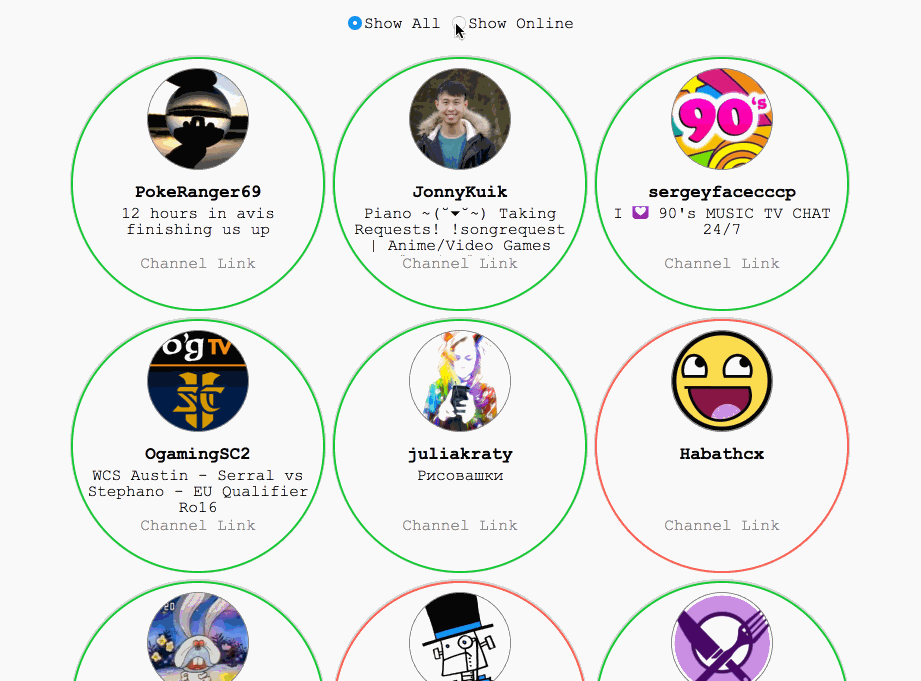

I'm for Natural Beauty, but naked HTML is kinda plain.
Random Quotes Generator
- Delivers fresh quotes with a click
- Allows users to tweet a desirable quote
- Libraries: jQuery, Bootstrap
quotes.peteprogr.zone
Pete's Weather Channel
- This app gives the user's weather on location
- The weather and the icon suit each other
- Libraries: jQuery, Weather Icons
weather.peteprogr.zone
Wikipedia Search
- Built to do a quick Search of Wikipedia
- The user can also click for a random article
- Libraries: jQuery, Angular.js
wikipedia.peteprogr.zone
Favourite Twitch.tv Streams
- This is a list of my favourite Twitch channels
- The user can show/hide inactive streams
- Libraries: jQuery

twitch.peteprogr.zone
landing
- quotes
- weather
- wikipedia
- twitch
co
codepen